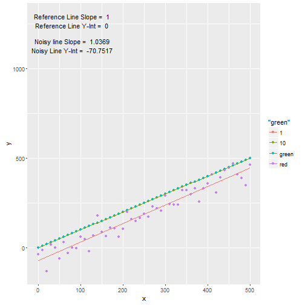
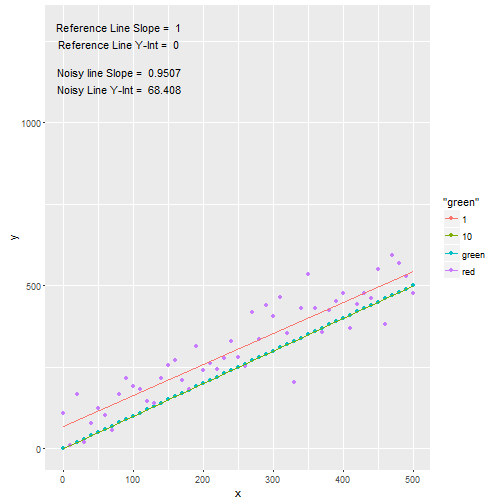
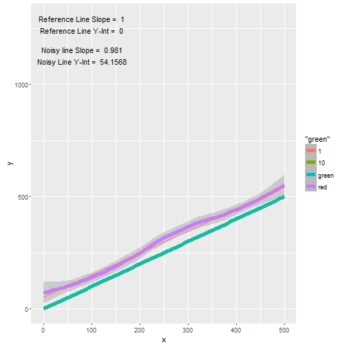
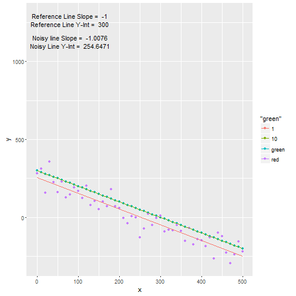
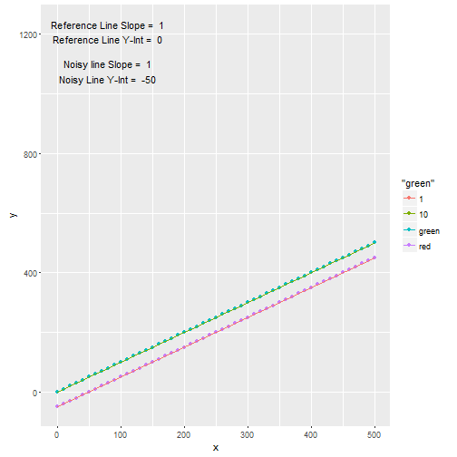

Interactive Noise/Error Manipulation
An "Interactive Shiny Project" Presentation Pitch
dd1947in
A Very Brief Description
One can study and get better in any subject with the use of interactive applications . Interactive applications are very important tools to demonstrate products and ideas to a wider audience. This presentation is submitted to pitch an "Interactive Shiny Project".
The following slides show a a list of plots that are generated in "Interactive Shiny Project" that accompany these project pitch slides . The following methodology is followed in the design of the "Interactive Shiny Project".
- Points (x, y) on a reference line y = s1 * x + c1 are generated for a given slope and intercept.
- Points (x, y) on a noisy line yo = y + random_normal_error(mean_err, sd_err) are generated for a given mean and sd .
- A linear regression model is fit through reference line and noisy line .
- User is given Plot options of Points and Line/Smooth.
- User can manipultate slope, intercept, mean of error, sd of error and create new plots .
- User can study the effects of various parameters on the reference and noisy lines .
Plot 1 : Beta = 1; Y-int = 0; Mean = 0; SD = 0 ; Type = point

Plot 2 : Beta = 1; Y-int = 0; Mean = 0; SD = 50 ; Type = point

Plot 3 : Beta = 1; Y-int = 0; Mean = -50; SD = 50 ; Type = point

Plot 4 : Beta = 1; Y-int = 0; Mean = 50; SD = 50 ; Type = point

Plot 5 : Beta = 1; Y-int = 0; Mean = -50; SD = 50 ; Type = line/smooth

Plot 6 : Beta = 1; Y-int = 0; Mean = 50; SD = 50 ; Type = line/smooth

Plot 7 : Beta = -1; Y-int = 0; Mean = 0; SD = 0 ; Type = point

Plot 8 : Beta = -1; Y-int = 300; Mean = 50; SD = 50 ; Type = point

Plot 9 : Beta = 1; Y-int = 0; Mean = -50; SD = 0 ; Type = point

Plot 10 : Beta = 1; Y-int = 0; Mean = 50; SD = 0 ; Type = point